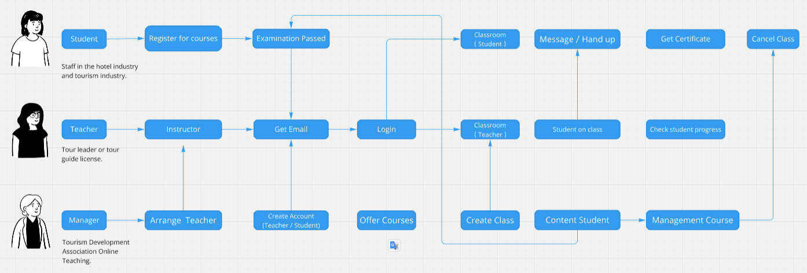
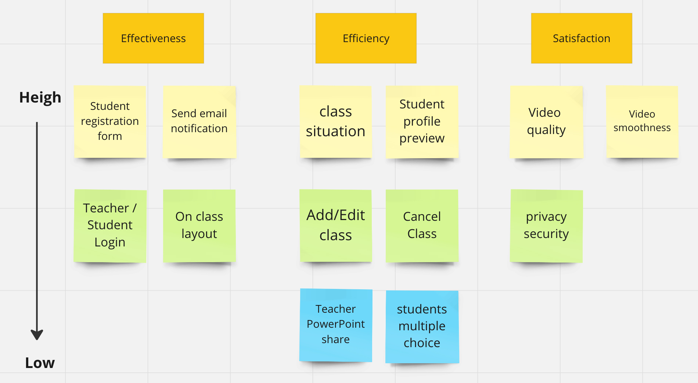
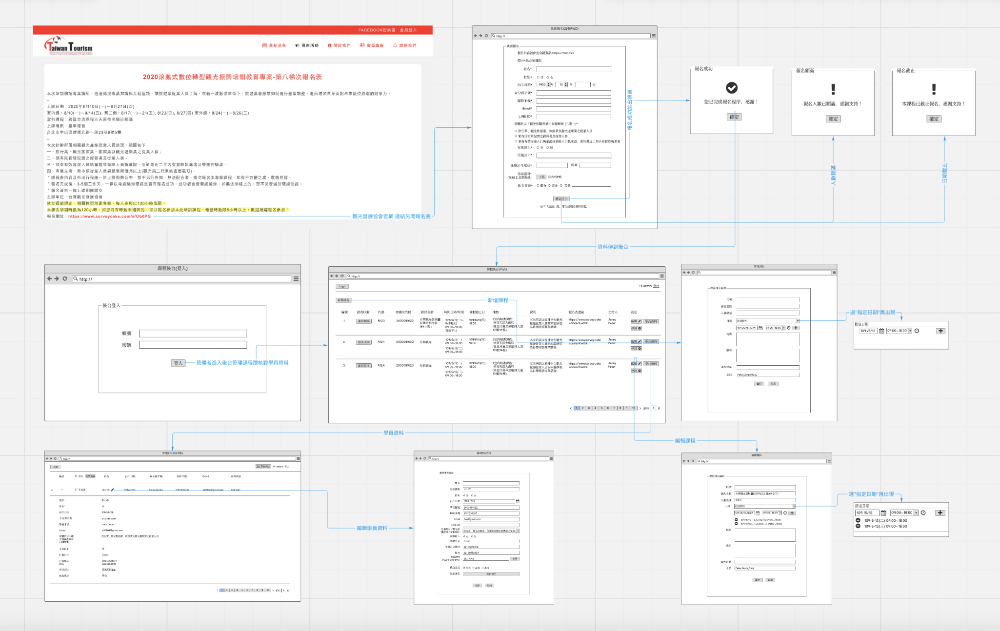

Online Teaching - IOS & Website
UX Research・UI・Prototype・Coding
Project Details
Description－
The 2020 Digital Transformation Tourism Revitalization Training and Education Project cooperates with the government for digital transformation. The main trainers are employees of the travel industry, tourism hotel industry, hotel industry and tourism industry. Due to the epidemic situation, the original physical courses have been changed to online teaching courses.
Therefore, the motivation to use it is to strengthen the training of relevant heavy industry personnel to complete the classroom projects and hours, not only to improve skills and obtain relevant licenses, but also to catch up with digital transformation and meet market needs. The application level of the original communication system is further expanded to improve the overall operating experience.
This project starts from the user's point of view, uses user research, and takes the situational needs as the first stage of planning.
First stage target－
Offer B2B Communication system application, using video online teaching platform, provided to tourism development association (manager), tour leader or tour guide license (teacher), hotel industry and tourism and entertainment industry professionals (students), front and back use, to meet classroom learning Department and self-learning situation.
User story－
- As a student, I want to strengthen my education through the digital transformation of the epidemic, so I can improve my skills and get a license to meet the needs of the tourism market in the future.
- As a teacher, I want to assist the Tourism Development Association to digitally transform the teaching content, so I can assist the heavy industry personnel to obtain relevant licenses.
- As an administrator, I want to manage the situation through the background, so I can master the class status of teachers and students, and course management.
Relationship between elements －


Function and relationship diagram of white layout organization
Flow Chart
-
The elements drawn by the service flow diagram are:
* Ｕser's goal
* The key tasks that must be experienced in order to achieve the goal
* How key tasks are accomplished in partnership with stakeholders
The picture above is using the situation as an example.
Service flow diagrams show how users achieve goals and which roles are involved in tasks. -
Role：
-
Students (Tourism and heavy industry personnel)
Students receive course notifications from administrators
Students receive teacher teaching content and new knowledge
Students use the online teaching system to take classes
Student completed projects and hours
The student successfully obtained the certificate
-
Teacher (Leader or Tour Guide License)
The teacher receives the class notification from the manager (class host)
Teacher Preparation Course Briefing Teaching
Teachers can view students' study hours and classroom status
-
Manager (Tourism Development Association)
Responsible for providing teacher and student account passwords
Provide course information
Create course information for students to register, add and edit
Arrange for teachers to attend classes
Liaison with students and teachers
Manage course content and student lists
Assist student account batches to pass the review
-
Students (Tourism and heavy industry personnel)
-
Define the task:
-
Students (related to tourism and heavy industry personnel)
Register for a course → examination passed → Email notification → Attend class → Completion of course projects and hours → Get relevant certificates
-
Teacher (Leader or Tour Guide License)
Class host → Email notification → On class → Check student progress → Assist students in obtaining their licenses
-
Manager (Tourism Development Association)
Arrange teachers and contact students → Create account secret (teacher/student) → Provide course information → Manage courses, student profiles → Assist teachers and students in class
-
Students (related to tourism and heavy industry personnel)
-
Use the three principles of availability to confirm requirements and reach consensus:

Translate the results of user research and user task analysis into service flow diagrams
Simple functions and less development time are pushed to the front.
Design Flow
-
Sketch：
I usually start the design process with sketches and quickly generate pictures. During this process, I can know what problems are, and discuss with the PM which writing functions should be added or deleted, which is an efficient way to discuss.

Front desk - teaching sketches of teachers and students
-
Wireframes：
Using low-fidelity interactive prototypes, look for 3 different role goals to test, test whether they meet the situation and solve needs, and test for usability.
Front desk - teaching screen of teachers and students
A file will be output, and the testee will directly click on the screen. Background - Manager Manage the content of the course time and student information
Assist me in communicating with engineers and confirming the feasibility of functions and processes.
UI Design
-
Front-end：
After confirming that there is no problem with the above Wireframes, I began to think about the visual, the main style is fresh, clean, concise, comfortable, stable, and technological, and the design style, elements and colors are defined in the process.
Use Adobe XD to design UI appearance to help users achieve their goals intuitively on the operation interface.
Considering that engineers need a UI component library afterwards, the UI system is also sorted out.

-
Backend：
Reference element UI https://element.eleme.io/#/zh-CN , in the case of insufficient development time, the open source UI component library will be used to develop front-end screen directly in VScode.
After the flowchart is drawn, the confirmation function is no problem. Enter VScode and use HTML, SCSS, and simple JS to make dynamic and assist engineers in subsequent production.
UI Flow
Front-end and Backend overflow, which lists each step, encountered situation, and operation process of the screen, which is convenient for engineers to understand, and also checks whether the user's operation is smooth, defines the interaction, and displays various status error messages.
https://overflow.io/s/FRO0DQQW?node=5bf3c7f7

Front-end － Teaching operation screen steps for teachers and students

Backend － Functions and explanations encountered in each operation screen step
UI System

What did I learn from it?
Analyze the user's hypothetical user situation, use the service flow chart to help stakeholders in various departments reach a consensus at the current stage, clarify the direction of the problem, quickly confirm the and tests in the sketch, and finally design the screen and summarize the UI System to cooperate with engineers.